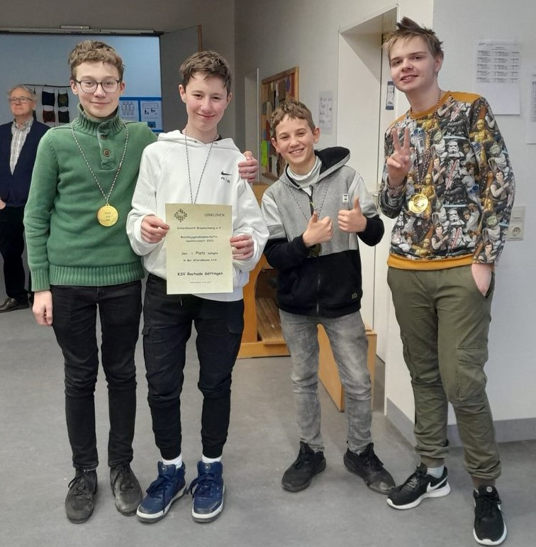

Aktuelles
12. März: Diesen Sonntag wurden die Bezirksjugendmannschaftsmeisterschaften in den Altersklassen U10, U12 und U16 ausgetragen. Der KSV fuhr mit einer U12-und einer U16-Mannschaft nach Wolfenbüttel. Die U12-Mannschaft bestehend aus Jakob, Felix, Tom und Henri verkaufte sich hierbei sehr gut. Sie mussten sich lediglich zwei Mannschaften geschlagen geben und landeten auf einem guten 4. Platz. Wenn man bedenkt, dass die Mannschaft sogar aus drei U10 Spielern besteht, lässt sich in den kommenden Jahren also definitiv auf einen Titel hoffen!
Die U16-Mannschaft mit David, Moritz ergänzt durch die U14-Spieler Mark und Lukas durfte in ihrer ersten Partie direkt gegen die Mitfavoriten vom KSV Rochade Braunschweig spielen. Lukas gewannt mit einem brutalen Angriff, Moritz mit einer sicheren und souveränen Vorstellung und Mark konnte, nachdem er Material gewann, die Partie mit wenig Zeit beiderseits ebenfalls für sich entscheiden. Da machte es nichts aus, dass David in Zeitnot einem starken Jonas Bangert unterlag. Nach diesem Mannschaftskampf maschierte die Mannschaft durch das restliche Turnier und gab nur noch lediglich einen Brettpunkt ab. Damit sicherte sich der KSV nach der U14 die zweite Bezirksmannschaftsmeisterschaft.
Die U16-Mannschaft mit David, Moritz ergänzt durch die U14-Spieler Mark und Lukas durfte in ihrer ersten Partie direkt gegen die Mitfavoriten vom KSV Rochade Braunschweig spielen. Lukas gewannt mit einem brutalen Angriff, Moritz mit einer sicheren und souveränen Vorstellung und Mark konnte, nachdem er Material gewann, die Partie mit wenig Zeit beiderseits ebenfalls für sich entscheiden. Da machte es nichts aus, dass David in Zeitnot einem starken Jonas Bangert unterlag. Nach diesem Mannschaftskampf maschierte die Mannschaft durch das restliche Turnier und gab nur noch lediglich einen Brettpunkt ab. Damit sicherte sich der KSV nach der U14 die zweite Bezirksmannschaftsmeisterschaft.

04.-05. März: In der Jugendbundesliga wurden dieses Wochenende die dritte und vierte Runde zentral in Braunschweig ausgetragen. Da die Mannschaft in der zweiten Runde spielfrei hatte, war der letzte Jugenbundesliga-Mannschaftskampf gegen den KSV Rochade Braunschweig, der die Ausrichtung des zentralen Spieltags übernahm, schon etwas her. Hervorzuheben ist dabei die gesamte Organisation des KSV, bestehend aus Catering, Werbung, die es sogar an die große Mediawall der Braunschweiger Zeitung (!) geschafft hat, digitaler Live-Übertragung und vielem mehr...
Leider musste die Mannschaft zu beiden Spielen ersatzgeschwächt antreten, war aber ob des gesamten Eventcharakters dennoch hochmotiviert. Beim Mannschaftskampf am Samstag ging es gegen die Mannschaft des Hagener SV, die bereits den SV Werder Bremen schlagen konnten. In der Eröffnung kamen die Hagener insgesamt besser weg. Luan verlor nach einigen Ungenauigkeiten in der Eröffnung bereits eine Figur, Bennet einen Bauern und auch Alex und Mark standen etwas schlechter. Kurze Zeit später verlor dann Moritz eine Qualität und der Mannschaftskampf sah nach einer bitteren Klatsche aus. Doch dann kämpften sich Moritz und Luan zurück in ihre Partien, bis schließlich beide ein Remis sichern konnten. Alex gelang es in einer Stellung mit entgegengesetzten Rochadestellungen die Verteidigung des Gegners zu durchbrechen und dadurch einen weiteren Punkt für die Mannschaft zu sichern. Bennet konnte sein Turmendspiel mit Bauern weniger nicht halten und auch Pavel - in Zeitnot - musste sich seinem Gegner geschlagen geben. Mark spielte als Letzter, musste aber mit Läufer gegen Turm bereits um das Remis kämpfen. Sein stark aufspielender Gegner bewies allerdings eine feine Technik und wandelte den Materialvorteil souverän um, sodass der Mannschaftskampf insgesamt 2:4 ausging.
Am nächsten Tag ging es dann gegen den SK Lehrte, gegen den die Chancen nominell nicht besser als gegen Hagen aussahen. Bis auf an einem Brett waren alle KSVler die Underdogs. Die Mannschaft war jedoch bemüht, nicht punktlos aus dem Doppelspieltag rauszugehen. Dabei startete der Mannschaftskampf suboptimal: Bennet und Luan mussten sich beide schnell ihren stark favorisierten Gegnern nach Fehlern in der Eröffnung beugen, sodass die Mannschaft bereits früh einem 0:2 hinterher laufen musste. Entgegen aller Erwartungen besiegte Mark seinen Gegner mit über 200 DWZ-Punkten mehr dann durch einen sehenswerten Angriff, sodass es nur noch 1:2 stand. Lukas, der Moritz am Sonntag ersetzte, gelang dann das Remis aus vorher sehr umkämpfter Stellung. An Brett 1 geriet Alex nach falschen Zügen in der Eröffnung schnell unter die Räder, konnte sich dann allerdings mit einem Figurenopfer aus heiterem Himmel die bessere Stellung erspielen. In Zeitnot fand er dann die richtigen Züge und konnte schließlich mit einem spektakulären Angriff und Qualitätsopfer die Partie zu seinen Gunsten entscheiden. Es stand somit 2.5:2.5 und alles kam auf Pavel an. Dieser hatte sich ein Turmendspiel mit Mehrbauern erarbeitet und versuchte mit großer Mühe, dieses zu konvertieren, was auch lange Zeit gut aussah. Er fand allerdings - auch unter Zeitdruck - leider nicht den gewinnbringenden Plan, wonach die Partie im Remis endete. Bilanz des Sonntag war somit ein 3:3 gegen den Tabellenführer. Auch wenn hier rückblickend mehr drinne gewesen wäre, hätte jeder der Spieler vor dem Mannschaftskampf ein 3:3 sofort unterschrieben.
Somit ist vorerst der Sprung von den Abstiegsplätzen geschafft, den es dann am 16.04. gegen den 1. SC Anhalt zu verteidigen gilt.
Partien des Doppelspieltags zum Nachspielen findet ihr hier:
Leider musste die Mannschaft zu beiden Spielen ersatzgeschwächt antreten, war aber ob des gesamten Eventcharakters dennoch hochmotiviert. Beim Mannschaftskampf am Samstag ging es gegen die Mannschaft des Hagener SV, die bereits den SV Werder Bremen schlagen konnten. In der Eröffnung kamen die Hagener insgesamt besser weg. Luan verlor nach einigen Ungenauigkeiten in der Eröffnung bereits eine Figur, Bennet einen Bauern und auch Alex und Mark standen etwas schlechter. Kurze Zeit später verlor dann Moritz eine Qualität und der Mannschaftskampf sah nach einer bitteren Klatsche aus. Doch dann kämpften sich Moritz und Luan zurück in ihre Partien, bis schließlich beide ein Remis sichern konnten. Alex gelang es in einer Stellung mit entgegengesetzten Rochadestellungen die Verteidigung des Gegners zu durchbrechen und dadurch einen weiteren Punkt für die Mannschaft zu sichern. Bennet konnte sein Turmendspiel mit Bauern weniger nicht halten und auch Pavel - in Zeitnot - musste sich seinem Gegner geschlagen geben. Mark spielte als Letzter, musste aber mit Läufer gegen Turm bereits um das Remis kämpfen. Sein stark aufspielender Gegner bewies allerdings eine feine Technik und wandelte den Materialvorteil souverän um, sodass der Mannschaftskampf insgesamt 2:4 ausging.
Am nächsten Tag ging es dann gegen den SK Lehrte, gegen den die Chancen nominell nicht besser als gegen Hagen aussahen. Bis auf an einem Brett waren alle KSVler die Underdogs. Die Mannschaft war jedoch bemüht, nicht punktlos aus dem Doppelspieltag rauszugehen. Dabei startete der Mannschaftskampf suboptimal: Bennet und Luan mussten sich beide schnell ihren stark favorisierten Gegnern nach Fehlern in der Eröffnung beugen, sodass die Mannschaft bereits früh einem 0:2 hinterher laufen musste. Entgegen aller Erwartungen besiegte Mark seinen Gegner mit über 200 DWZ-Punkten mehr dann durch einen sehenswerten Angriff, sodass es nur noch 1:2 stand. Lukas, der Moritz am Sonntag ersetzte, gelang dann das Remis aus vorher sehr umkämpfter Stellung. An Brett 1 geriet Alex nach falschen Zügen in der Eröffnung schnell unter die Räder, konnte sich dann allerdings mit einem Figurenopfer aus heiterem Himmel die bessere Stellung erspielen. In Zeitnot fand er dann die richtigen Züge und konnte schließlich mit einem spektakulären Angriff und Qualitätsopfer die Partie zu seinen Gunsten entscheiden. Es stand somit 2.5:2.5 und alles kam auf Pavel an. Dieser hatte sich ein Turmendspiel mit Mehrbauern erarbeitet und versuchte mit großer Mühe, dieses zu konvertieren, was auch lange Zeit gut aussah. Er fand allerdings - auch unter Zeitdruck - leider nicht den gewinnbringenden Plan, wonach die Partie im Remis endete. Bilanz des Sonntag war somit ein 3:3 gegen den Tabellenführer. Auch wenn hier rückblickend mehr drinne gewesen wäre, hätte jeder der Spieler vor dem Mannschaftskampf ein 3:3 sofort unterschrieben.
Somit ist vorerst der Sprung von den Abstiegsplätzen geschafft, den es dann am 16.04. gegen den 1. SC Anhalt zu verteidigen gilt.
Partien des Doppelspieltags zum Nachspielen findet ihr hier:
26. Februar: Die zweite Mannschaft gewinnt knapp mit 2.5:1.5 gegen SG Elmrochade 3. Volker blieb hierbei seiner 100% Remisquote treu und holte ein wichtiges Remis gegen einen 1600er an Brett 1. Marius unterlag seinem Gegner und Fynn sowie auch Jakob konnten ihre Partien gewinnen.
Die erste Mannschaft hingegen fuhr nur zweit nach Hankensbüttel, da die Anfahrt über öffentliche Verkehrsmittel für organisatorische Hindernisse und die derzeitige Klausurenphase für wenig Motivation in der Mannschaft sorgte. Zu zweit schafften es Alex und Rita an den Weißbrettern dennoch, den Gegnern ein 2:2 abzuknöpfen.
Die zweite Mannschaft bleibt damit unangefochten an der Tabellenspitze der Bezirksstaffel Nord und die erste fällt auf den zweiten Platz der Bezirksstaffel Süd, kann den Aufstieg aber immer noch aus eigener Kraft schaffen.
Die erste Mannschaft hingegen fuhr nur zweit nach Hankensbüttel, da die Anfahrt über öffentliche Verkehrsmittel für organisatorische Hindernisse und die derzeitige Klausurenphase für wenig Motivation in der Mannschaft sorgte. Zu zweit schafften es Alex und Rita an den Weißbrettern dennoch, den Gegnern ein 2:2 abzuknöpfen.
Die zweite Mannschaft bleibt damit unangefochten an der Tabellenspitze der Bezirksstaffel Nord und die erste fällt auf den zweiten Platz der Bezirksstaffel Süd, kann den Aufstieg aber immer noch aus eigener Kraft schaffen.
05. Februar: Die zweite Mannschaft holt ersatzgeschwächt ein gutes 2:2 gegen SC BS Gliesmarode 6. Marius und Arne gewannen hierbei ihre Partien souverän; Mika und Florian S. unterlagen ihren favorisierten Gegnern. Dies ist der erste Mannschaftspunkt, den die zweite Mannschaft diese Saison abgibt. Dennoch beträgt der Abstand zum Tabellenzweiten immer noch drei Mannschaftspunkte.
Die erste Mannschaft meldet sich mit einem 3.5:0.5 Erfolg gegen SC BS Gliesmarode 7 nach dem Organisationschaos des letzten Spieltags wieder zurück. Florian E. und Pavel gewannen ihre Partien schnell. Moritz spielte wie sein Gegner eine gute Partie. Da die Stellung allerdings am Ende sehr geschlossen war und wenig Raum für Gewinnversuche bot, einigten sich die Spieler auf ein Remis. Alex' Gegner spielte lange eine sehr gute Partie und hatte noch lange Chancen, um das Remis zu kämpfen. Eine kleine Ungenauigkeit reichte allerdings schon, wonach Alex die Partie souverän beendete. Mit diesem wichtigen Sieg gegen einen der Top-Konkurrenten befindet sich jetzt auch die erste Mannschaft wieder an der Tabellenspitze, da die Mannschaft vom SVG Salzgitter nicht über ein 2:2 gegen Peine 3 hinauskam.
Die erste Mannschaft meldet sich mit einem 3.5:0.5 Erfolg gegen SC BS Gliesmarode 7 nach dem Organisationschaos des letzten Spieltags wieder zurück. Florian E. und Pavel gewannen ihre Partien schnell. Moritz spielte wie sein Gegner eine gute Partie. Da die Stellung allerdings am Ende sehr geschlossen war und wenig Raum für Gewinnversuche bot, einigten sich die Spieler auf ein Remis. Alex' Gegner spielte lange eine sehr gute Partie und hatte noch lange Chancen, um das Remis zu kämpfen. Eine kleine Ungenauigkeit reichte allerdings schon, wonach Alex die Partie souverän beendete. Mit diesem wichtigen Sieg gegen einen der Top-Konkurrenten befindet sich jetzt auch die erste Mannschaft wieder an der Tabellenspitze, da die Mannschaft vom SVG Salzgitter nicht über ein 2:2 gegen Peine 3 hinauskam.
26. Januar: Diesen Donnerstag haben die Älteren ihr Schulschachbezirksfinale gespielt. Dabei konnten einige Rochadespieler mit dem FKG den ersten Platz in der WKII erspielen und qualifizieren sich damit für die Landesrunde in Hannover. In der WKI konnten die Rochadespieler, die für das THG antraten, leider nicht gewinnen.
22. Januar: am Sonntag fanden die ersten beiden Runden der BMM u14 in Braunschweig statt. Dabei erkämpfte sich unsere I. in der ersten Runde ein 2:2 gegen Peine und schlug anschließend BSF II mit 4:0. Unsere II. erkämpfte sich ein 2:2 gegen Gifhorn und unterlag anschließend dem KSV Rochade Braunschweig mit 0:4.
23. Januar: Schulschachbezirksfinale der Grundschulen in Bad Harzburg: Albani II landet im Mittelfeld auf Platz 8, und Albani I wird mit Felix Asendorf 2. und qualifiziert sich damit für das Landesfinale in Hannover.
04.-08. Januar: Vier Rochadespieler haben bei der Landeseinzelmeisterschaft (LEM) in Verden teilgenommen. Dabei belegten Luca Uhlendorff und Rita Nizamova im A-Open mit 4 P. aus 7 Partien die Plätze 21 und 28, wobei Rita beste niedersächsische Spielerin des Turniers war und neben einem Ratingpreis und einem Pokal auch den Titel Niedersachsens Landesmeisterin nach Hause nehmen konnte.
15. Januar: Die zweite Mannschaft gewinnt gegen SVG Salzgitter 2 mit 2.5-1.5. Während Arne es mit einem starken Gegner an Brett 1 zu tun hatte und Volker an Brett 3 mit Schwarz das Remis halten konnte, gelangen Philipp und Till an den Weißbrettern Siege, wodurch der zweiten Mannschaft der vierte Sieg am vierten Spieltag gelang.
Bei der ersten Mannschaft hingegen kam es zu einem großen Missverständnis über den Spielort. Dadurch war dann schlussendlich kein Spielmaterial vor Ort, obwohl beide Mannschaften durch Glück im Unglück im falschen Spiellokal gelandet sind. Da die erste als ausrichtende Mannschaft dazu verpflichtet war, für das Spielmaterial zu sorgen, und dieser Pflicht nicht nachkam, wurde der Mannschaftskampf daher als verloren gewertet. Durch dieser Panne fällt die erste Mannschaft auf Rang 3 in der Live-Tabelle. Allerdings gibt es ja noch eine Rückrunde, in der alles wettgemacht werden kann. Zum aktuellen Spieltag kommt ihr hier. 04.-08. Januar: Vier Rochadespieler haben bei der Landeseinzelmeisterschaft (LEM) in Verden teilgenommen. Dabei belegten Luca Uhlendorff und Rita Nizamova im A-Open mit 4 P. aus 7 Partien die Plätze 21 und 28, wobei Rita beste niedersächsische Spielerin des Turniers war und neben einem Ratingpreis und einem Pokal auch den Titel Niedersachsens Landesmeisterin nach Hause nehmen konnte.
Den Vogel schoss jedoch David Tulchynsky ab, der wie sein Bruder im B-Open teilnahm. David holte sich mit 6 P. den 2. Platz der Gesamtwertung mit einer DWZ-Leistung von über 1950. Mark holte 3.5 P. und wurde 35., wobei auch er nur 2 Partien verlor.
Alle Ergebnisse, Tabellen, Berichte und Fotos findet ihr hier 01. Januar: Da der Vertrag unserer alten Website zum neuen Jahr abgelaufen ist, haben wir das gleich zum Anlass genommen, ein paar Veränderungen zu etablieren:
Visuell fällt sicherlich gleich das neue Farbschema in den Farben Rot/Schwarz ins Auge. Etwas unscheinbar, aber auch neu ist das Logo oben links in der Ecke. Hier dürft ihr es nochmal in groß bestaunen: In Zukunft werden wir Artikel hier unter Aktuelles verfassen. Über die neusten Geschehnisse werdet ihr durch die Meldungen auf der rechten Seite informiert. Diese leiten euch dann immer zum zugehörigen Artikel weiter. Beiträge der alten Homepage könnt ihr immer noch im Archiv einsehen, fehlende Artikel werden in den nächsten paar Wochen noch ergänzt.
In Zukunft werden wir Artikel hier unter Aktuelles verfassen. Über die neusten Geschehnisse werdet ihr durch die Meldungen auf der rechten Seite informiert. Diese leiten euch dann immer zum zugehörigen Artikel weiter. Beiträge der alten Homepage könnt ihr immer noch im Archiv einsehen, fehlende Artikel werden in den nächsten paar Wochen noch ergänzt.
Außerdem lässt sich vielleicht das gegenüber der alten Website verbesserte HTML erkennen; dies liegt daran, dass wir uns jetzt nicht mehr auf die Designs bzw. Interfaces der Hosting-Plattform verlassen, sondern fortan alles selber programmieren.
Bei Wünschen oder Verbesserungsvorschlägen für die Homepage haben wir aus diesen Gründen ein offenes Ohr, schreibt einfach unter website@ksv-rochade-goettingen.de!
Die Homepage ist allerdings nicht unser einziger Neujahrsvorsatz: In absehbarer Zukunft sind auch neue KSV-Rochade T-Shirts im neuen Look mit dem neuen Logo geplant.
Stay tuned! ;) 27.-30. Dezember: Von dem 27.-30. Dezember fand die Deutsche Vereinsmeisterschaft der U16 in Darmstadt statt. Unser Team bestehend aus Antal Mimkes (C), David Tulchynsky, Luan Lesser und Marius Liestmann holte einen sensationellen 10. Platz aus 20 Mannschaften, obwohl es Position 19 gesetzt war.  Antal an Brett 1 spielte mit 4,5 aus 7 ein überdurchschnittliches Tunier mit einer Leistung von 2051. Hervorzuheben ist hier sein wunderschönes Damenopfer in Partie 5. David an Brett 2 hatte ein schweres Turnier. Er kam häufig in sehr deprimierende, geschlossene Stellungen, die er gegen sehr gute Gegner verteidigen musste, was ihm mal besser und mal schlechter gelang. Insgesamt machte er trotz "nur" 1,5 aus 7 DWZ-Plus. An Brett 3 sprengte Luan alle Erwartungen und schloss sein sehr erfolgreiches Jahr (+220 DWZ!) mit einer Leistung von 1623 ab. Ihm gelang mit 3/7 ein dreistelliger Zuwachs in einem Turnier! Marius war der unterbewertetste Spieler der Mannschaft; seine 1292 vor dem Turnier waren weit von seiner echten Spielstärke entfernt, was er bei dem Turnier unter Beweis stellte. Die 3 Punkte aus 7 Partien gegen einen Schnitt von DWZ 1555 ergeben eine Leistung von über 1500 und ebenfalls ein dreistelliges Plus. Höhepunkt der Mannschaft im Turnier war der Sieg in dem vorletzten Spiel gegen die starke Mannschaft aus Vatterstetten und dem zwischenzeitlichen achten Tabellenplatz. Tiefpunkt war 55. Tb5 in der 5. Runde.
Antal an Brett 1 spielte mit 4,5 aus 7 ein überdurchschnittliches Tunier mit einer Leistung von 2051. Hervorzuheben ist hier sein wunderschönes Damenopfer in Partie 5. David an Brett 2 hatte ein schweres Turnier. Er kam häufig in sehr deprimierende, geschlossene Stellungen, die er gegen sehr gute Gegner verteidigen musste, was ihm mal besser und mal schlechter gelang. Insgesamt machte er trotz "nur" 1,5 aus 7 DWZ-Plus. An Brett 3 sprengte Luan alle Erwartungen und schloss sein sehr erfolgreiches Jahr (+220 DWZ!) mit einer Leistung von 1623 ab. Ihm gelang mit 3/7 ein dreistelliger Zuwachs in einem Turnier! Marius war der unterbewertetste Spieler der Mannschaft; seine 1292 vor dem Turnier waren weit von seiner echten Spielstärke entfernt, was er bei dem Turnier unter Beweis stellte. Die 3 Punkte aus 7 Partien gegen einen Schnitt von DWZ 1555 ergeben eine Leistung von über 1500 und ebenfalls ein dreistelliges Plus. Höhepunkt der Mannschaft im Turnier war der Sieg in dem vorletzten Spiel gegen die starke Mannschaft aus Vatterstetten und dem zwischenzeitlichen achten Tabellenplatz. Tiefpunkt war 55. Tb5 in der 5. Runde.
Fazit: Auch wenn sicher mehr drin gewesen wäre: Der KSV ist in der U16 ein Top 10 Verein in Deutschland!
Ausführliche Tabellen und Ergebnisse sowie 55. Tb5 findet ihr hier
11. Dezember: Beide Rochade Teams hielten sich am Sonntag schadlos: Die I. gewann kampflos in Wolfenbüttel mit 4:0 und auch die II. gwann beim KSV Rochade Braunschschweig mit 4:0. Siehe unter Unsere Mannschaften.
04. Dezember: Unsere II. Jugendmannschaft bleibt in der Jugendliga Niedersachsen weiter ungeschlagen: 4,5:1,5-Sieg in Uelzen. Siehe unter Unsere Mannschaften.
27. November: Unsere beiden Herrenteams hielten sich in der Bezirksstaffel schadlos: Die I. gewann gegen Peine III mit 4:0, und die II. schlug Peine IV knapp mit 2.5:1.5. Siehe unter Unsere Mannschaften.
20. November: Mit einem überraschendem 3:3 gegen den KSV Rochade Braunschweig startet unsere I. in der Jugendbundesliga Mitte. Siehe unter Unsere Mannschaften.
11.-13. November: Bei der BEM in Wolfsburg haben 2 Rochadejugendliche mitgespielt: Florian Eberle und David Tulchynsky. Beide holten hervorragende 3P. aus 5 Partien und landeten auf den Plätzen 10 und 17 bei 41 Teilnehmern. Tabelle siehe unter Turniere außerhalb.
06. November: Erfolgreicher Auftakt für unsere Teams in der Bezirksklasse der Volljährigen: Der KSV Rochade GÖ I schlägt Hankensbüttel II mit 4:0, und auch unsere II. Mannschaft schlägt Elmrochade III mit 3,5:0,5. Ergebnisse siehe unter Unsere Mannschaften.
20.-23. Oktober: BJEM in Wolfsburg: Der KSV Rochade Göttingen konnte sich bei den Bezirksjugendeinzelmeisterschaften in Wolfsburg mit 4 Podestplätzen schmücken. Sieg für Mark Tulchynsky in der u14, und drei 3.Plätze Simon Zimmermann u16, Lukas Kalusa u14, und Felix Assendorf in der u10. Alle Infos und Bericht siehe unter Turniere außerhalb.
09. Oktober: Mit einem leistungsgerechten 3:3 gegen Hellern startet unsere II. in die Saison der Jugendliga Niedersachsen. Bericht siehe unter Unsere Mannschaften.
24.-25. September: Unsere u16 mit Antal Mimkes, David Tulchynsky, Luan Lesser und Marius Liestmann konnte sich mit Siegen über den SK Lehrte 2,5:1,5, und jeweils 3:1-Siegen über Werder Bremen und TuS Varrel, sich souverän für die DVM u16 im Dezember qualifizieren. Tabelle und Einzelheiten siehe unter nsj-online.de
17. September: Alexander Kanzow verteidigt mit ungeschlagenen 8 P. aus 9 Partien seinen Titel als Vereinsmeister und Ropte-Cup-Sieger vor Christian Hartogh und Mariia Kozachenko. Tabelle und Bericht siehe unter Vereinsmeisterschaft.
04. September: Christian Hartogh wird beim Lehrter Open mit 6 P. aus 9 Partien 21. von 127 Teilnehmern. Siehe unter sk-lehrte.de
03. September: Alexander Kanzow ist Vereinsblitzmeister mit 7 P. aus 7 Partien vor Christan Hartogh 6 P. und Rita Nizamova 5 P. Siehe unter Schnell+Blitz-VM.
14.-20. August: 2.Platz für Luca Uhlendorff bei Comitec-Open in Lehrte. Er blieb in der B-Gruppe mit 5 P. ungeschlagen, Pavel Mimkes mit 4.5 P. wurde 5., Tom Behringer mit 4.5 P. 7.,und Arne Schütz mit 2 P. 25. In der A-Gruppe wurde Christian Hartogh mit 3.5 P. 15. Alle infos siehe unter comitec-open.com.
05. August: Die Ausschreibung für die JHV 2022, das Vereinsblitzturnier, den Ropte-Cup und die Termine für die nächste Mannschaftssaison sind jetzt online. Siehe unter Nächste Termine.
10. Juli: Mit einer 0,5:5,5 Niederlage gegen die SG Hildesheim/ESV beendet unsere II. die Saison in der Jugendliga Niedersachsen. Das bedeutet am Ende Platz 6 und damit den Klassenerhalt. Alle Infos siehe unter Unsere Mannschaften.
15. Januar: Die zweite Mannschaft gewinnt gegen SVG Salzgitter 2 mit 2.5-1.5. Während Arne es mit einem starken Gegner an Brett 1 zu tun hatte und Volker an Brett 3 mit Schwarz das Remis halten konnte, gelangen Philipp und Till an den Weißbrettern Siege, wodurch der zweiten Mannschaft der vierte Sieg am vierten Spieltag gelang.
Bei der ersten Mannschaft hingegen kam es zu einem großen Missverständnis über den Spielort. Dadurch war dann schlussendlich kein Spielmaterial vor Ort, obwohl beide Mannschaften durch Glück im Unglück im falschen Spiellokal gelandet sind. Da die erste als ausrichtende Mannschaft dazu verpflichtet war, für das Spielmaterial zu sorgen, und dieser Pflicht nicht nachkam, wurde der Mannschaftskampf daher als verloren gewertet. Durch dieser Panne fällt die erste Mannschaft auf Rang 3 in der Live-Tabelle. Allerdings gibt es ja noch eine Rückrunde, in der alles wettgemacht werden kann. Zum aktuellen Spieltag kommt ihr hier. 04.-08. Januar: Vier Rochadespieler haben bei der Landeseinzelmeisterschaft (LEM) in Verden teilgenommen. Dabei belegten Luca Uhlendorff und Rita Nizamova im A-Open mit 4 P. aus 7 Partien die Plätze 21 und 28, wobei Rita beste niedersächsische Spielerin des Turniers war und neben einem Ratingpreis und einem Pokal auch den Titel Niedersachsens Landesmeisterin nach Hause nehmen konnte.
Den Vogel schoss jedoch David Tulchynsky ab, der wie sein Bruder im B-Open teilnahm. David holte sich mit 6 P. den 2. Platz der Gesamtwertung mit einer DWZ-Leistung von über 1950. Mark holte 3.5 P. und wurde 35., wobei auch er nur 2 Partien verlor.
Alle Ergebnisse, Tabellen, Berichte und Fotos findet ihr hier 01. Januar: Da der Vertrag unserer alten Website zum neuen Jahr abgelaufen ist, haben wir das gleich zum Anlass genommen, ein paar Veränderungen zu etablieren:
Visuell fällt sicherlich gleich das neue Farbschema in den Farben Rot/Schwarz ins Auge. Etwas unscheinbar, aber auch neu ist das Logo oben links in der Ecke. Hier dürft ihr es nochmal in groß bestaunen:
Außerdem lässt sich vielleicht das gegenüber der alten Website verbesserte HTML erkennen; dies liegt daran, dass wir uns jetzt nicht mehr auf die Designs bzw. Interfaces der Hosting-Plattform verlassen, sondern fortan alles selber programmieren.
Bei Wünschen oder Verbesserungsvorschlägen für die Homepage haben wir aus diesen Gründen ein offenes Ohr, schreibt einfach unter website@ksv-rochade-goettingen.de!
Die Homepage ist allerdings nicht unser einziger Neujahrsvorsatz: In absehbarer Zukunft sind auch neue KSV-Rochade T-Shirts im neuen Look mit dem neuen Logo geplant.
Stay tuned! ;) 27.-30. Dezember: Von dem 27.-30. Dezember fand die Deutsche Vereinsmeisterschaft der U16 in Darmstadt statt. Unser Team bestehend aus Antal Mimkes (C), David Tulchynsky, Luan Lesser und Marius Liestmann holte einen sensationellen 10. Platz aus 20 Mannschaften, obwohl es Position 19 gesetzt war.
Fazit: Auch wenn sicher mehr drin gewesen wäre: Der KSV ist in der U16 ein Top 10 Verein in Deutschland!
Ausführliche Tabellen und Ergebnisse sowie 55. Tb5 findet ihr hier
11. Dezember: Beide Rochade Teams hielten sich am Sonntag schadlos: Die I. gewann kampflos in Wolfenbüttel mit 4:0 und auch die II. gwann beim KSV Rochade Braunschschweig mit 4:0. Siehe unter Unsere Mannschaften.
04. Dezember: Unsere II. Jugendmannschaft bleibt in der Jugendliga Niedersachsen weiter ungeschlagen: 4,5:1,5-Sieg in Uelzen. Siehe unter Unsere Mannschaften.
27. November: Unsere beiden Herrenteams hielten sich in der Bezirksstaffel schadlos: Die I. gewann gegen Peine III mit 4:0, und die II. schlug Peine IV knapp mit 2.5:1.5. Siehe unter Unsere Mannschaften.
20. November: Mit einem überraschendem 3:3 gegen den KSV Rochade Braunschweig startet unsere I. in der Jugendbundesliga Mitte. Siehe unter Unsere Mannschaften.
11.-13. November: Bei der BEM in Wolfsburg haben 2 Rochadejugendliche mitgespielt: Florian Eberle und David Tulchynsky. Beide holten hervorragende 3P. aus 5 Partien und landeten auf den Plätzen 10 und 17 bei 41 Teilnehmern. Tabelle siehe unter Turniere außerhalb.
06. November: Erfolgreicher Auftakt für unsere Teams in der Bezirksklasse der Volljährigen: Der KSV Rochade GÖ I schlägt Hankensbüttel II mit 4:0, und auch unsere II. Mannschaft schlägt Elmrochade III mit 3,5:0,5. Ergebnisse siehe unter Unsere Mannschaften.
20.-23. Oktober: BJEM in Wolfsburg: Der KSV Rochade Göttingen konnte sich bei den Bezirksjugendeinzelmeisterschaften in Wolfsburg mit 4 Podestplätzen schmücken. Sieg für Mark Tulchynsky in der u14, und drei 3.Plätze Simon Zimmermann u16, Lukas Kalusa u14, und Felix Assendorf in der u10. Alle Infos und Bericht siehe unter Turniere außerhalb.
09. Oktober: Mit einem leistungsgerechten 3:3 gegen Hellern startet unsere II. in die Saison der Jugendliga Niedersachsen. Bericht siehe unter Unsere Mannschaften.
24.-25. September: Unsere u16 mit Antal Mimkes, David Tulchynsky, Luan Lesser und Marius Liestmann konnte sich mit Siegen über den SK Lehrte 2,5:1,5, und jeweils 3:1-Siegen über Werder Bremen und TuS Varrel, sich souverän für die DVM u16 im Dezember qualifizieren. Tabelle und Einzelheiten siehe unter nsj-online.de
17. September: Alexander Kanzow verteidigt mit ungeschlagenen 8 P. aus 9 Partien seinen Titel als Vereinsmeister und Ropte-Cup-Sieger vor Christian Hartogh und Mariia Kozachenko. Tabelle und Bericht siehe unter Vereinsmeisterschaft.
04. September: Christian Hartogh wird beim Lehrter Open mit 6 P. aus 9 Partien 21. von 127 Teilnehmern. Siehe unter sk-lehrte.de
03. September: Alexander Kanzow ist Vereinsblitzmeister mit 7 P. aus 7 Partien vor Christan Hartogh 6 P. und Rita Nizamova 5 P. Siehe unter Schnell+Blitz-VM.
14.-20. August: 2.Platz für Luca Uhlendorff bei Comitec-Open in Lehrte. Er blieb in der B-Gruppe mit 5 P. ungeschlagen, Pavel Mimkes mit 4.5 P. wurde 5., Tom Behringer mit 4.5 P. 7.,und Arne Schütz mit 2 P. 25. In der A-Gruppe wurde Christian Hartogh mit 3.5 P. 15. Alle infos siehe unter comitec-open.com.
05. August: Die Ausschreibung für die JHV 2022, das Vereinsblitzturnier, den Ropte-Cup und die Termine für die nächste Mannschaftssaison sind jetzt online. Siehe unter Nächste Termine.
10. Juli: Mit einer 0,5:5,5 Niederlage gegen die SG Hildesheim/ESV beendet unsere II. die Saison in der Jugendliga Niedersachsen. Das bedeutet am Ende Platz 6 und damit den Klassenerhalt. Alle Infos siehe unter Unsere Mannschaften.